KOREA PLAINLY GUIDES
Useful guides.
Nothing complicated.
Practical, nationwide information for understanding Korea — transport, money, apps, food, daily life, language and more.
 START
STARTArriving in Korea: A Checklist for Your First Day
Everything to sort out before you fly and in your first few hours after landing, in the order you will need it.
Read guide → 01
017 Things First-Time Visitors Should Know About Seoul
Transport cards, map apps, cash, subway exits and etiquette for your first days in Seoul.
Read guide → 02
02How to Use the Seoul Subway as a Foreigner
Cards, lines, transfers, signs and simple subway etiquette.
Read guide → 03
0310 Korean Restaurant Words Worth Knowing
Ten Korean words that make eating out easy, with pronunciation: calling the server, ordering, not spicy, refills, takeaway and paying the bill.
Read guide →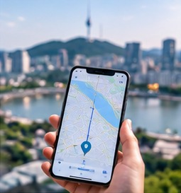
04Naver Map vs Google Maps in Korea
Why Google Maps is limited in Korea and how to use Naver Map or KakaoMap instead: walking directions, subway exits, English settings and search tips.
Read guide → 05
05Do You Need Cash in Korea? Cards, ATMs and Payments
Where foreign cards work, when you still need cash, and how to get won without extra fees.
Read guide →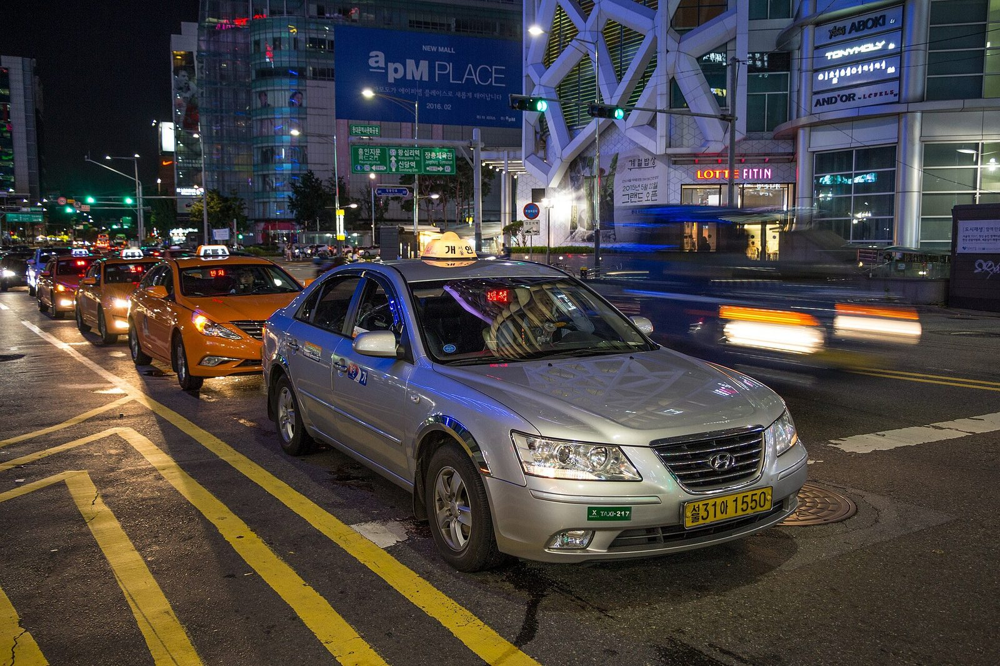
06Kakao T and k.ride: Taxi Apps for Visitors to Korea
Which taxi app works for visitors to Korea: Kakao T, k.ride, Uber and TABA compared, with fares, pickup tips and paying with a foreign card.
Read guide → 07
07Korean Cafe Etiquette for First-Time Visitors
How Korean cafes work: ordering at the counter or kiosk, buzzers, one drink per person, staying to work, returning your tray and what to order.
Read guide → 08
08Korean Dining Etiquette: 9 Simple Things to Know
Nine Korean table manners worth knowing: who eats first, spoons and chopsticks, sharing side dishes, pouring drinks, paying and why you don't tip.
Read guide → 09
09Wi-Fi, SIM or eSIM: Staying Connected in Korea
Compare the main ways to stay connected during your trip.
Read guide →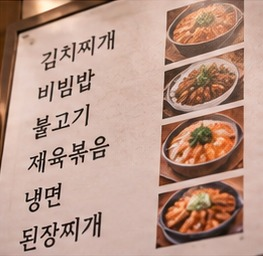
10How to Read a Korean Menu Without Speaking Korean
Read a Korean menu without speaking Korean: the words for cooking methods and ingredients, price terms like 인분, spotting spicy dishes and translation apps.
Read guide → 11
11What Is a Korean Convenience Store Meal Like?
What to eat at a Korean convenience store and how: lunch boxes, triangle gimbap, cup ramyeon with hot water, 1+1 deals and eating in the store.
Read guide → 12
12Seoul Neighborhoods: A Simple Guide for First-Time Visitors
A practical introduction to popular Seoul neighborhoods.
Read guide → 13
13How to Order Korean Food as a Foreigner
How ordering works in Korean restaurants: call buttons, table tablets and kiosks, portion rules, asking for less spice and paying at the counter.
Read guide → 14
14Korea Travel Mistakes That Are Easy to Avoid
16 common Korea travel mistakes and how to avoid them, from relying on Google Maps and missing palace closing days to tipping and rubbish rules.
Read guide →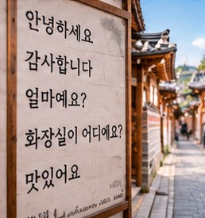
15Useful Korean Phrases You Will Actually Use
Polite phrases for greetings, ordering food, shopping, taxis and getting help, with easy pronunciation.
Read guide →How Korean Public Transport Transfers Work
Understand subway and bus transfers and transportation-card rules.
Read guide → 17
17What to Know Before Visiting a Korean Bathhouse
First time at a Korean bathhouse or jjimjilbang? How a visit works step by step, bath etiquette, the body scrub, prices and sleeping over.
Read guide → 18
18A Beginner’s Guide to Korean Street Food
Common Korean street foods and how to order them.
Read guide →How to Spend Your First Evening in Seoul
Just landed in Seoul? What to sort out, where to eat and which easy evening walks to take on your first night, plus getting back after the subway stops.
Read guide → 20
20
What to Know Before Using a Korean Convenience Store
Learn what Korean convenience stores sell, how to pay, how to heat ready-made food, and what to expect from services such as transit-card top-ups.
Read guide → 21
21
How Korean Recycling Works for Visitors
A practical guide to sorting rubbish in Korea, from recycling and food scraps to local rubbish bags and hotel bins.
Read guide → 22
22
How to Use Korean ATMs as a Foreigner
Find an ATM that accepts international cards, make a withdrawal in Korean won, and avoid common card and currency-conversion problems.
Read guide → 23
23
What Is a Korean Transit Card?
Learn how Korean transit cards work, where to buy and top them up, and how to use one on buses and subways during your visit.
Read guide → 24
24
How to Use Seoul Buses as a Foreigner
Learn how to plan a bus trip in Seoul, pay with a transit card, board and exit, and make transfers with less stress.
Read guide →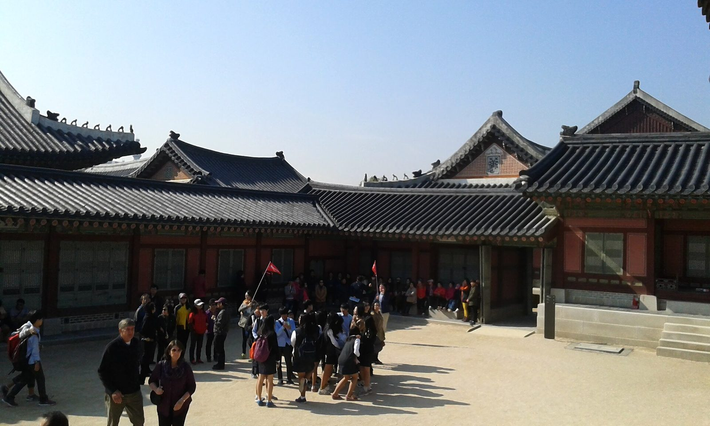
25Best Times to Visit Seoul Attractions
Plan your Seoul sightseeing around crowds, weather, and time of day. Find out when to visit palaces, markets, museums, neighborhoods, and outdoor attractions.
Read guide → 24
24
What to Know About Korean Delivery Food
A practical guide to ordering Korean delivery food, from finding an app and entering your address to meeting the courier and sorting the packaging.
Read guide →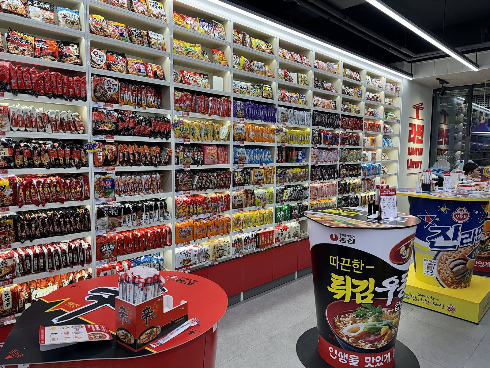
24How Korean Convenience Stores Compare
A practical guide to CU, GS25, 7-Eleven and emart24, including what to expect, how to choose a store and tips for buying food and everyday essentials.
Read guide →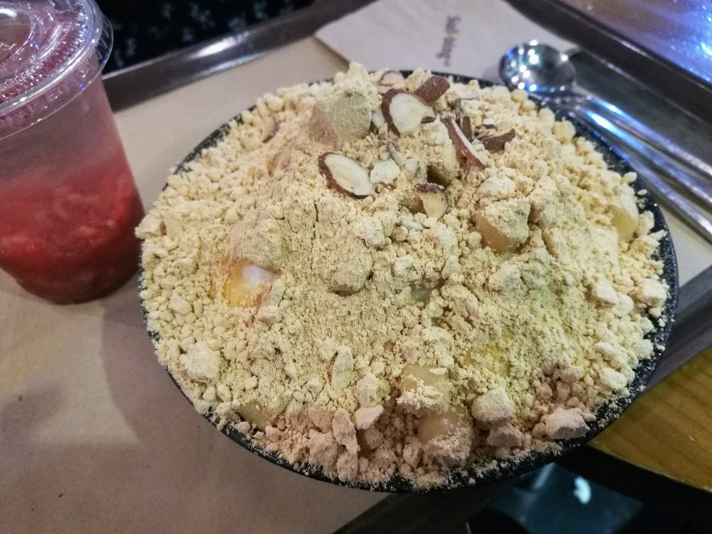
24Korean Café Menu Basics: What to Order and How
Learn common Korean café menu terms, drink and dessert options, and what to expect when ordering.
Read guide → 24
24
How to Use KakaoTalk in Korea
A practical guide for visitors to setting up KakaoTalk, adding contacts, messaging, and using business channels in Korea.
Read guide → 23
23
Incheon Airport to Seoul: AREX, Buses and Taxis Compared
Compare the AREX train, airport limousine buses and taxis from Incheon Airport to Seoul, with practical tips for choosing the best option.
Read guide → 24
24
3 Days in Seoul: A First-Timer's Itinerary
A relaxed three-day Seoul plan for first-time visitors: palaces and hanok lanes, markets and Myeongdong, N Seoul Tower and a day you choose yourself.
Read guide →One Day in Busan: A Coastal Itinerary
Spend one day on Busan's east coast: Haedong Yonggungsa Temple in the morning, Haeundae Beach, a Korean spa in Centum City and dinner by the sea.
Read guide → 26
26
Autumn Foliage in Korea 2026: When and Where to See It
When autumn leaves peak in Korea in 2026, the best places to see them in Seoul and beyond, and tips for avoiding the crowds.
Read guide →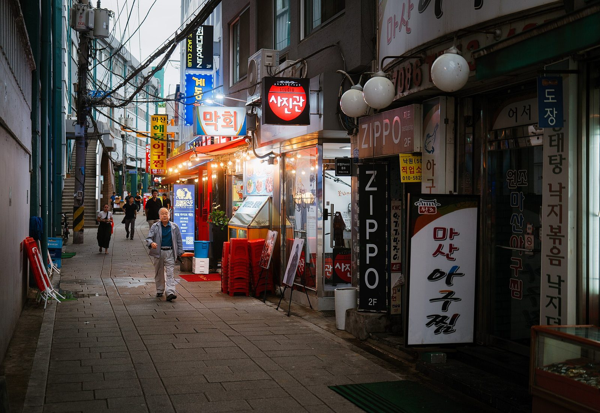
27Tax-Free Shopping in Korea: How Tourist Refunds Work
How tourist tax refunds work in Korea in 2026: the 15,000-won minimum, instant refunds at the till, airport kiosks and how not to lose your refund.
Read guide →K-ETA and the e-Arrival Card: Entering Korea in 2026
Do you need a K-ETA or visa for Korea in 2026, who is exempt until 31 December 2026, and how to fill in the free e-Arrival Card before you land.
Read guide → 29
29
Korea's Seasons: What the Weather Is Like and What to Pack
Korea's weather season by season: cherry blossoms and dust in spring, monsoon and heat in summer, autumn colours and cold winters, with what to pack.
Read guide → 30
30
3 Days in Jeju: An Island Itinerary for First-Timers
A three-day Jeju plan: the west coast and Hyeopjae Beach, Sunrise Peak and Udo on the east, then Hallasan or Seogwipo's waterfalls, with car and bus tips.
Read guide →One Day in Gyeongju: Temples, Tombs and Wolji Pond
See Gyeongju in one day: Bulguksa in the morning, the royal tombs, Cheomseongdae and Gyochon in the afternoon, and Wolji Pond lit up at night.
Read guide → 32
32
Easy Day Trips from Seoul for First-Time Visitors
The best day trips from Seoul and how to get there: Suwon's Hwaseong Fortress, the DMZ, Nami Island, Incheon, Jeonju and Gangneung.
Read guide → 33
33
Korea in Winter: What to Expect, Pack and Do
Visiting Korea in winter: how cold it gets, what to pack, skiing, ice festivals, Christmas lights, warming street food and what to watch out for.
Read guide → 34
34
Skiing in Korea: Resorts Near Seoul and How to Get There
When ski season runs in Korea, the best resorts near Seoul and in Gangwon, shuttle buses from the city, gear rental and lessons for beginners.
Read guide →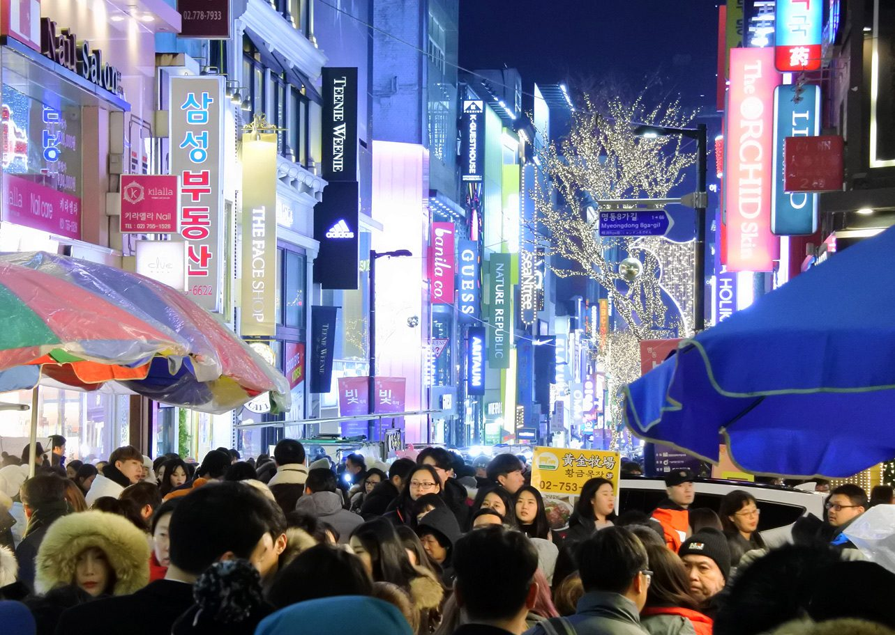
35Christmas and New Year in Seoul: Lights, Bells and Sunrise
How Christmas is celebrated in Korea, where to see Seoul's Christmas lights, the Bosingak bell on New Year's Eve and where to watch the first sunrise.
Read guide → 36
36
Seollal 2027: Visiting Korea During Lunar New Year
Seollal falls on 7 February 2027, with a holiday from 6 to 9 February. What happens, what closes, how transport is affected and tips for visitors.
Read guide →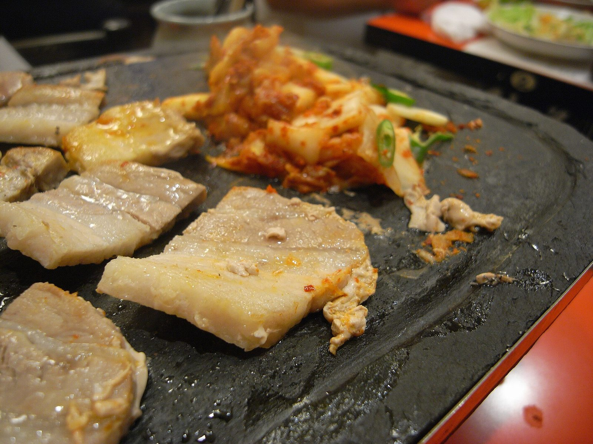
23How to Eat Korean BBQ: A Step-by-Step Guide for Visitors
Learn what to order, how to cook the meat, and how to make a Korean BBQ wrap, with practical tips for your first visit.
Read guide → 46
46
Korea in November: Weather, What to Pack and What to Do
Visiting Korea in November: how cold it gets, what to wear, the last autumn leaves, kimchi-making season, lantern and fireworks festivals, and the exam day that stops planes.
Read guide →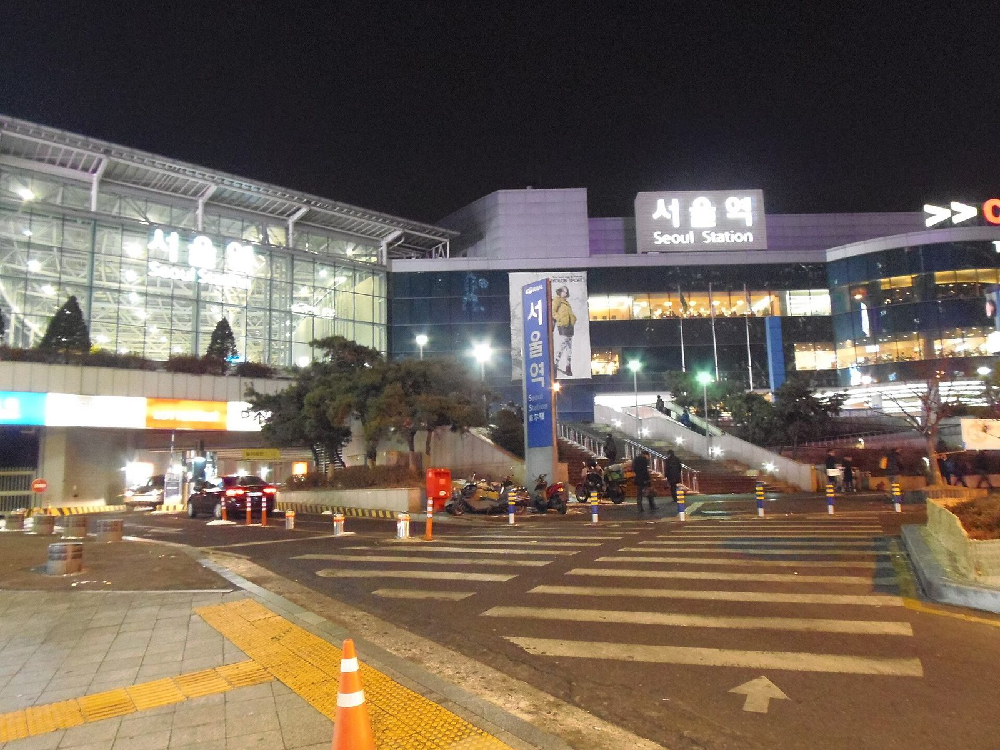
47Best Night Views in Seoul: Where to See the City Lights
Where to see Seoul at night: N Seoul Tower, the old city wall at Naksan Park, Seoul Sky, Han River bridges, Cheonggyecheon and more, with tips on timing and getting there.
Read guide →Cherry Blossom in Korea 2027: When and Where to See It
When cherry blossom is expected in Korea in 2027, from Jeju and Busan in late March to Seoul in early April, the best places to see it and how to plan around the crowds.
Read guide →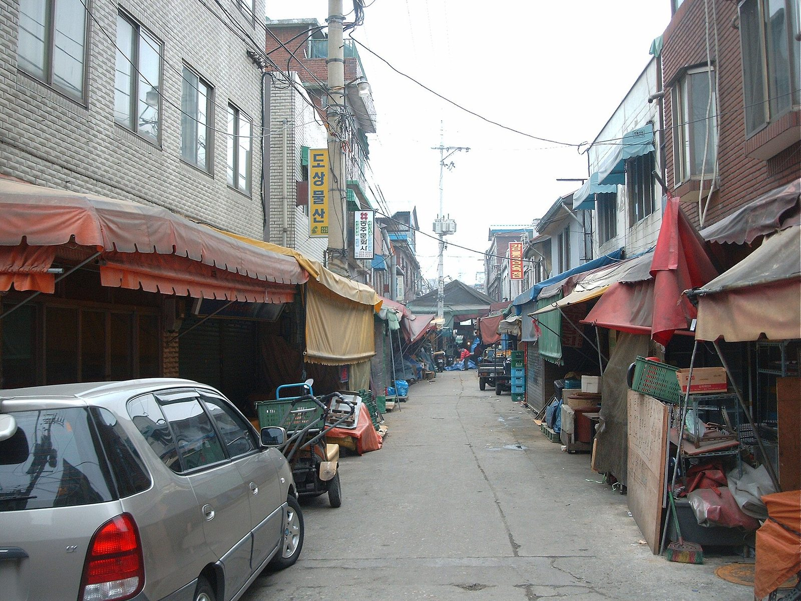
49How Much Does a Trip to Korea Cost? A Daily Budget Guide
A plain daily budget for Korea: what hotels, food, transport and sights cost, three sample budgets from backpacker to comfortable, and easy ways to save.
Read guide →How to Ride the KTX: Booking Korea's High-Speed Trains
A practical guide to booking KTX tickets, choosing the right station and seat, and finding your train on travel day.
Read guide → 50
50
Korea in December: Weather, What to Pack and What to Do
Visiting Korea in December: how cold it gets, what to wear, Christmas lights, the Seoul lantern festival, the first ski days and New Year's Eve at Bosingak bell.
Read guide → 51
51
Korea in January: Weather, What to Pack and What to Do
Visiting Korea in January: the coldest month, what to wear, ice fishing festivals, skiing, snowy palaces and how to stay warm, with tips for New Year's Day.
Read guide → 52
52
Korea in February: Weather, Seollal and What to Do
Visiting Korea in February: still cold but warming up, Lunar New Year (Seollal) on 6-9 February 2027, the last ski weeks, snow festivals and early signs of spring in the south.
Read guide →Korea's Winter Festivals: Ice Fishing, Snow and Lights
The best winter festivals in Korea for visitors: Hwacheon's trout ice fishing, Pyeongchang, Taebaek's snow sculptures, Seoul's lantern festival and winter light gardens, with how to get there.
Read guide → 54
54
7 Days in Korea: A First-Timer's Itinerary (Seoul, Gyeongju, Busan)
A one-week Korea itinerary for first-time visitors: three days in Seoul, a day trip, ancient Gyeongju and the beaches of Busan, linked by fast KTX trains, with a Jeju alternative.
Read guide → 55
55
10 Days to 2 Weeks in Korea: An Easy Itinerary
A 10-day Korea itinerary for first-time visitors: Seoul, Jeonju's hanok village, Gyeongju, Busan and Jeju, with how to stretch it to two weeks with the east coast and Seoraksan.
Read guide →5 Days in Seoul: A Relaxed Itinerary for First-Timers
Five days in Seoul for first-time visitors: palaces and hanok lanes, markets and Namsan, Hongdae and the Han River, Gangnam and Jamsil, and a day trip to the DMZ or Suwon.
Read guide →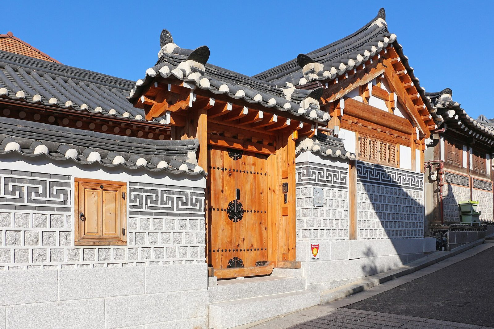
57First Trip to Korea? Start Here: A Step-by-Step Planner
Planning your first trip to Korea, step by step: when to go, how long to stay, entry rules, money, phones, getting from the airport, getting around and what to know on the ground.
Read guide →Learn to Read Hangul in an Hour: Korean Alphabet for Travellers
Learn to read the Korean alphabet before your trip: every letter with its sound, how syllable blocks work, a read-the-sign quiz and a memory game, with real words from Korean signs and menus.
Read guide → 59
59
Korea Packing List: What to Bring in Every Season (Interactive Checklist)
An interactive packing list for Korea: pick your season and tick off documents, money, phone and apps, clothes, health and handy extras. Your ticks are saved, and you can print it.
Read guide →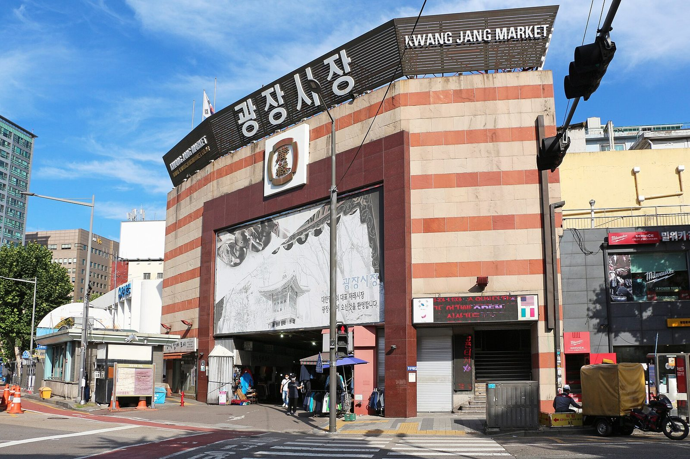
60Korea Trip Cost Calculator: How Much Will Your Trip Cost?
Work out a rough budget for your trip to Korea: choose how many days, your travel style, KTX trains and a Jeju flight, and see the cost per person in won and your own currency.
Read guide →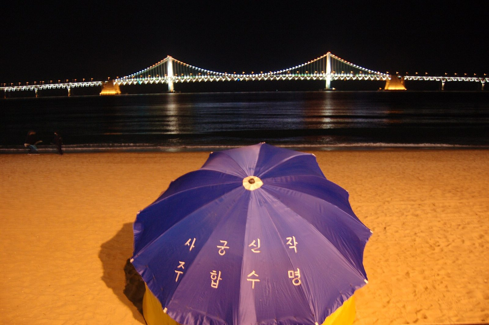
61Which Korean City Suits You? Take the Quiz
Seoul, Busan, Jeju, Gyeongju, Jeonju or Gangneung? Answer five quick questions and Kkachi the magpie will tell you which Korean city fits your travel style, with a guide to plan the trip.
Read guide →Festivals in Korea: What's On This Month and Coming Up
A festival calendar for Korea, updated every week: what is on now and coming up across the country, from food and lantern festivals to fireworks, flowers and ice fishing.
Read guide →Do You Tip in Korea? What Visitors Should Know
Tipping is not a normal part of everyday service in Korea. Learn what to expect at restaurants, in taxis, at hotels, and on tours—and what to do if a tip is requested.
Read guide →